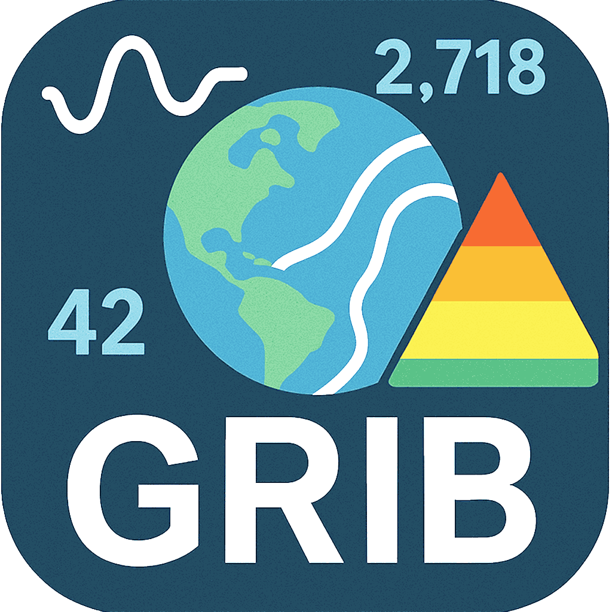

gribview
A tiny macOS app for peeking inside GRIB files – scrub through time, levels and parameters and see what your forecast is really doing.
gribview on macOS, plotting GRIB data with an interactive colour map.
What gribview can do
- Open one or more GRIB1/GRIB2 files and browse all messages.
- Scrub through forecast steps, levels and parameters in an interactive viewer.
- Inspect GRIB metadata, tweak colour maps and export quick PNG snapshots.
- Filter and export just the messages you care about to a new GRIB file.
How to run on macOS (unsigned app)
- Download the
Gribview.dmgfile using the button above. - Double‑click the DMG in Finder and drag
Gribview.appinto yourApplicationsfolder. - Try to launch gribview once from
Applications(or Spotlight). macOS will warn that the app is from an unidentified developer and block it. - Open
System Settings → Privacy & Security. Scroll down until you see the message saying that “gribview was blocked from use”. - Click Open Anyway, then confirm by clicking Open in the dialog that appears.
- From now on you can launch gribview normally, or just double‑click
.grib/.grib2files to open them in the app.